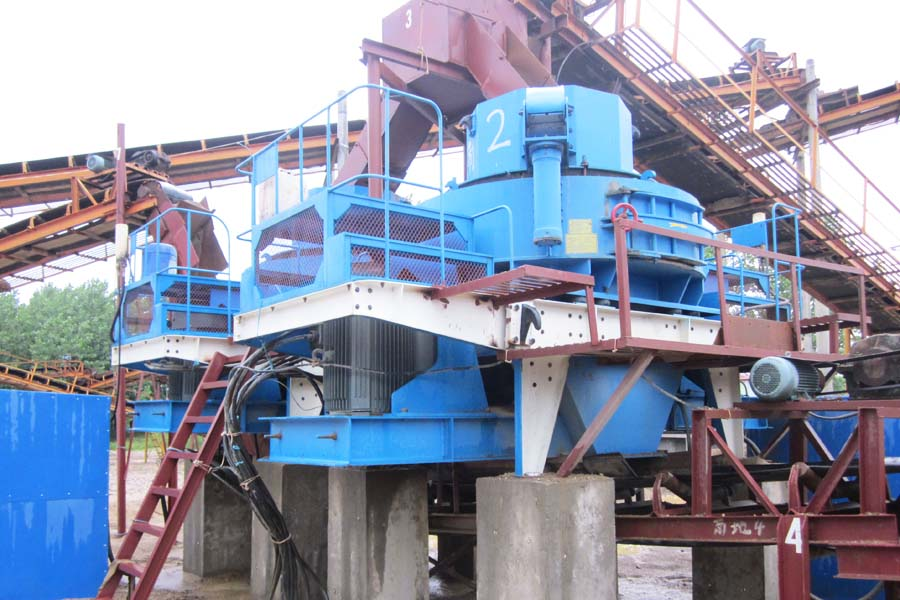

Construction waste crushing production line

Mobile construction waste crushing station for urban construction waste crushing.
gravel crushers to buy
Cheapest river gravel crusher price?
River gravel is an important mineral resources, after crushing, processing sand, screening and other related procedures, can be widely used in various construction fields, river pebbles mechanisms as concrete aggregate has a very good effect, it can effectively improve strength concrete aggregate, adhesion, durability, and improve the performance of concrete. Before the most important river gravel aggregate concrete, the need for sand processing, as an important river gravel crusher crushing orthopedic equipment, processing out of river pebbles finished uniform size, grain shape is excellent, with a good grade, fine modulus of adjustable resistance, is indispensable for the application of river pebbles application equipment.

Different manufacturers, different river gravel Sand upset
In order to meet the production needs of different users, each manufacturer will produce a variety of models of river gravel sand, each type of river gravel Sand performance parameters and the appearance of a different size, the price naturally also a great difference. Different models at different prices, generally speaking, the same kind of models of different specifications of the equipment, the smaller specifications the cheaper price, so that the cheapest river pebbles Sand should refer to the small river gravel crusher, small river on the market Sand Pebbles many manufacturers, production of small river gravel crusher price is not the same, in order to understand the specific pricing information, the need to ask in order to know the specific manufacturers.
Cheapest river pebbles Sand
CAG also produces a small river pebbles sand, but the difference of the total amount purchased by different users, because river gravel crusher can be customized according to the different needs of users, the price is not the same of course, but also have the lowest yuan from . River gravel sand production company compared to the same industry, the price is cheap, because CAG river gravel crusher is the old brand, though in recent years the price rose too fast, but the price is not much improved. Produced by river gravel crusher reliable, stable, low failure rate, but also has very good energy saving effect, power is appropriate, if you're interested in the company's equipment, you can consult our customer service staff for questioning, you can give specific prices, parameter information!
Leave Me A Message, Now
If you have any questions regarding equipment prices, production line configuration or other problems, you can send a message to us, we will contact you soon.